An autonomous valet-parking system that detects vehicles in an Isaac Sim digital twin, moves underneath them, and transports them to designated parking spaces.
The design iterations involved in developing a robot structure that can lift and transport vehicles reliably.
In ver.1, a single robot lifted the vehicle from underneath, which resulted in poor stability.
I tested a single-robot lifting design using arms that grip the wheels directly.
I redesigned the mechanism so the arms slide underneath the wheels and adjusted the structure to match the vehicle’s ground clearance.
This resulted in an arm-based lifting structure that can accommodate different vehicle types.
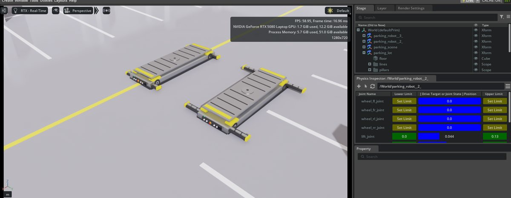
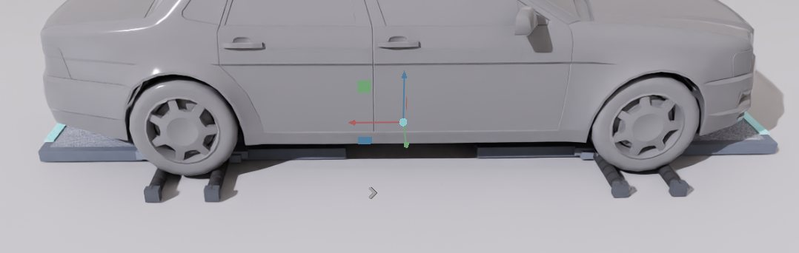
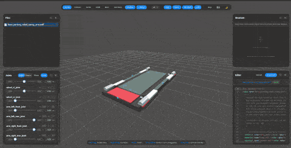
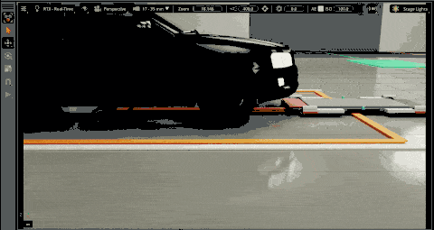
Because the wheel asset was cylindrical, an accurate collider was difficult to create, causing the wheels to float above the ground.
I removed the cylindrical collider and first tested a sphere-based collider.
I then replaced it with a Convex Mesh Collider fitted to the wheel mesh.
Lift height +31% , tire-width error reduced by a factor of 2.7 → accurate (0.256 m)improved.
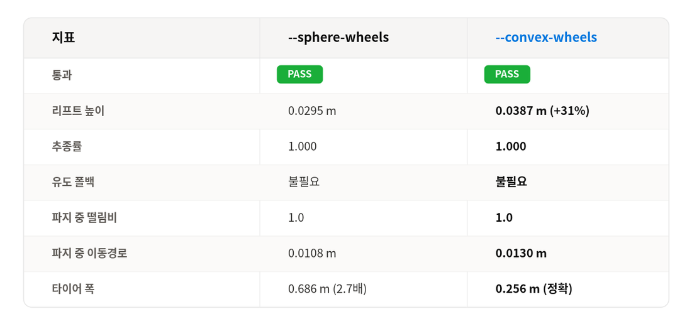
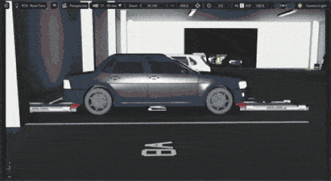
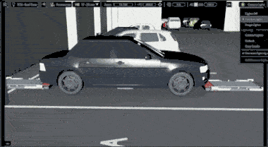
The robot and vehicle bounced during lifting and movement.
I analyzed two possible causes: robot instability and lift timing.
I added mass to the robot and introduced a margin into the lift-completion check.
The bouncing issue was resolved, allowing the robot to transport the vehicle stably.
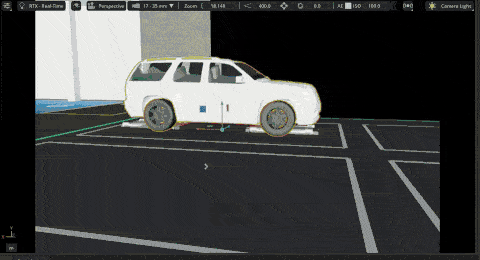
The robot operates in four stages: approach underneath the vehicle → lift → move → rotate.
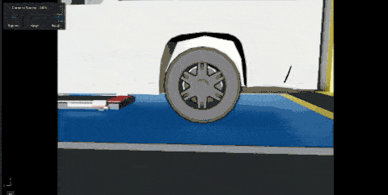
Moves precisely underneath the vehicle.
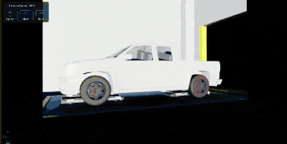
Grips the wheels and lifts the vehicle securely.
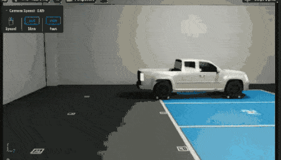
Moves to the destination while maintaining balance.
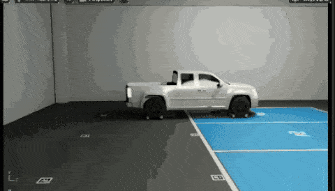
Changes direction while carrying the vehicle in a confined space.
The two robots pushed in opposite directions, causing truck_yaw to diverge to 124°.
Each robot followed its own target, but inertia and wheel slip caused them to lose control of the vehicle.
I defined a virtual center point C between the two robots and coordinated them using a rigid-body velocity field.
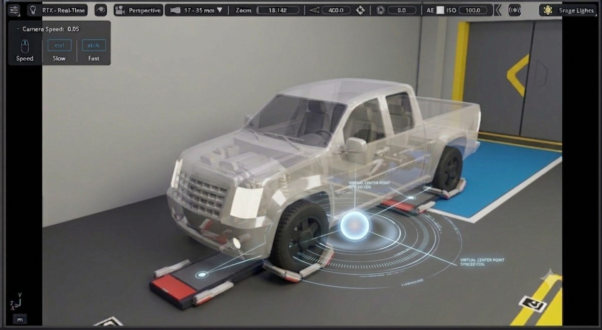
I designed and implemented the recognition and alignment system using a depth camera and ArUco markers.
RGB-only detection was unreliable across vehicle types and lighting conditions.
I monitored how depth values changed relative to a baseline.
I recalibrated the baseline for each approach and required the detection to persist for three consecutive frames.
The same logic detected both pickup trucks and SUVs without vehicle-specific calibration.
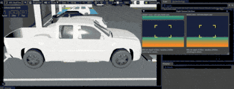
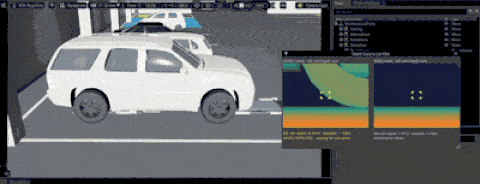
Using the minimum depth value in the ROI produced an error of up to 0.367 m because of the curved wheel surface.
I used two threshold-crossing points: entry_z and exit_z.
I assigned the front and rear axles to two robots and calculated target_z = (entry_z + exit_z) / 2.
Reduced error from 0.367 m to 0.020–0.034 m, up to 18× improvement.
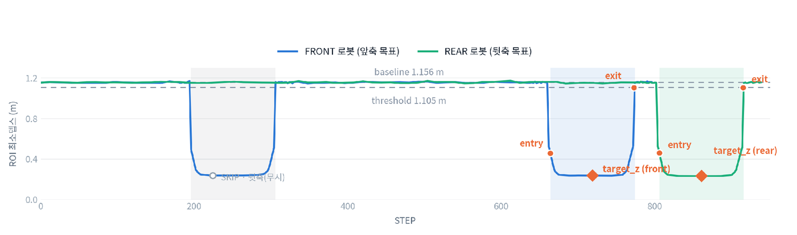
Approaching beneath a vehicle required accurate target-pose information.
I used cameras inside and underneath the vehicle to detect ArUco markers and tested detection rates at different distances.
I calculated the pose in real time and used cmd_vel to correct deviations from the target pose immediately.
The robot aligned reliably without deviating from its path, even in confined spaces.
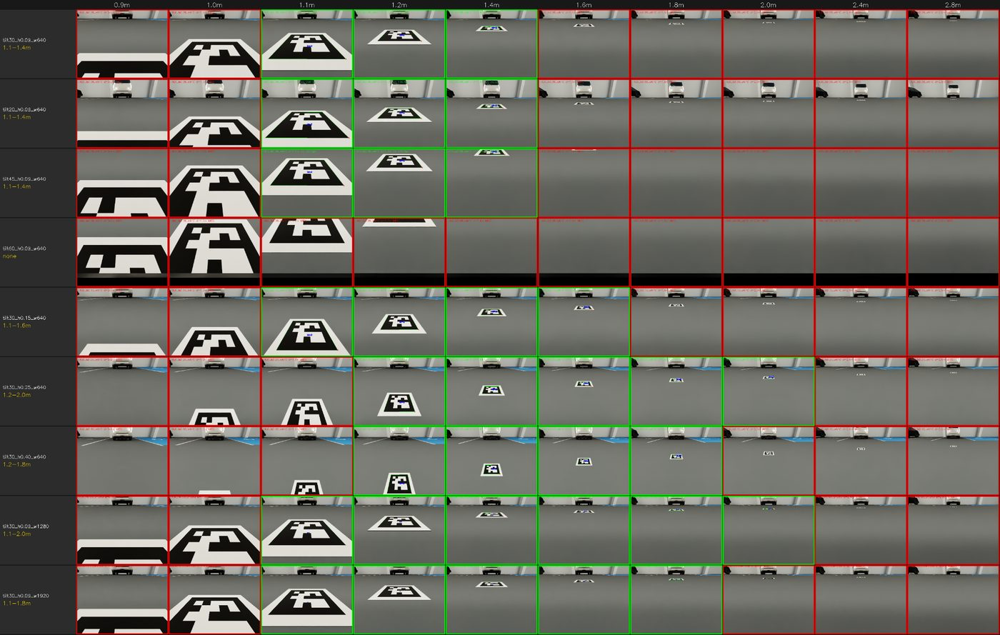
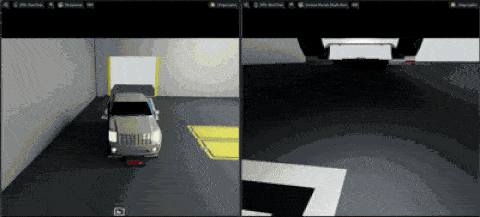